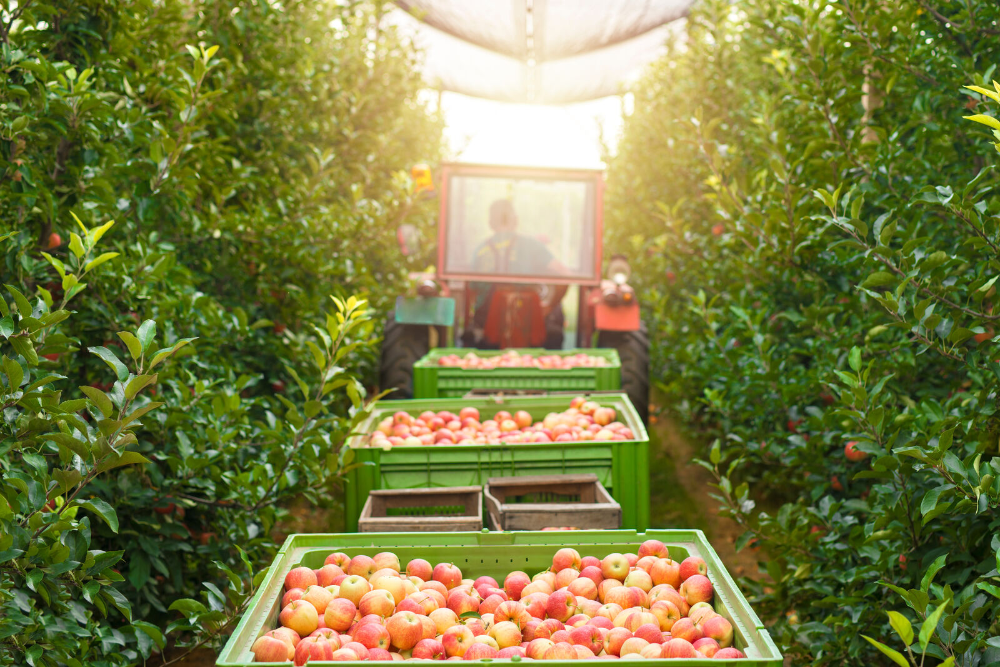
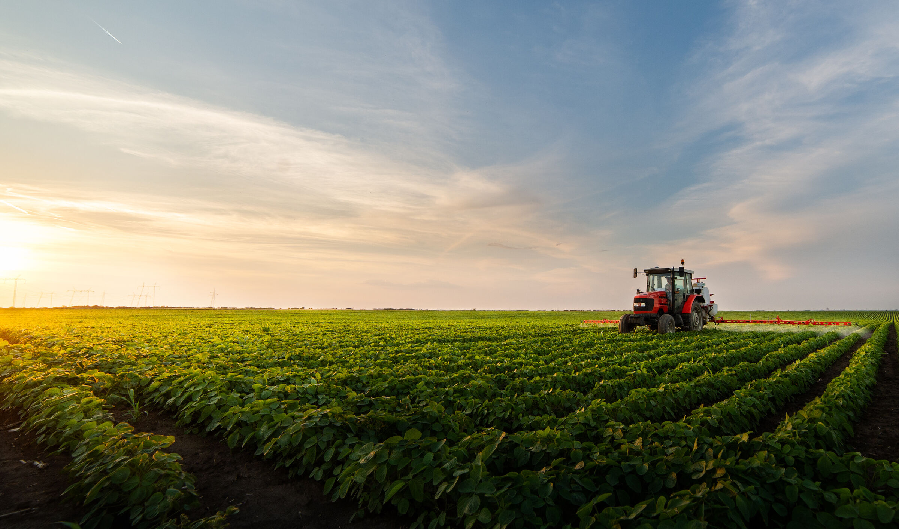
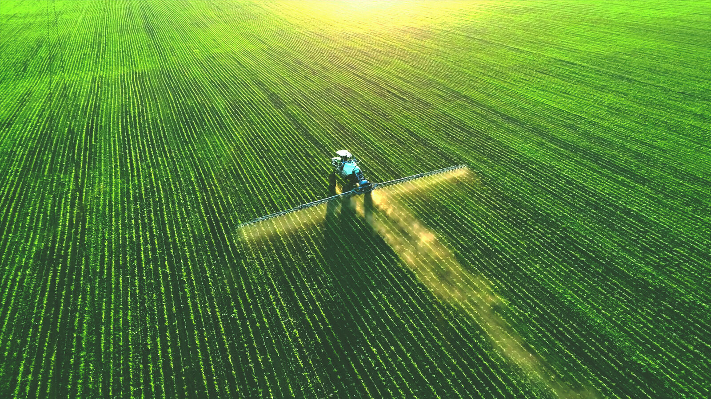
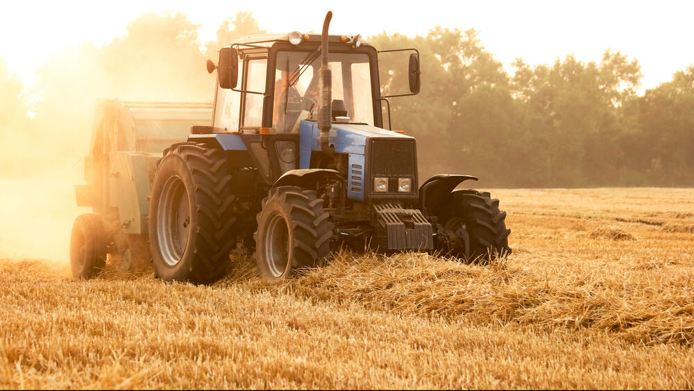
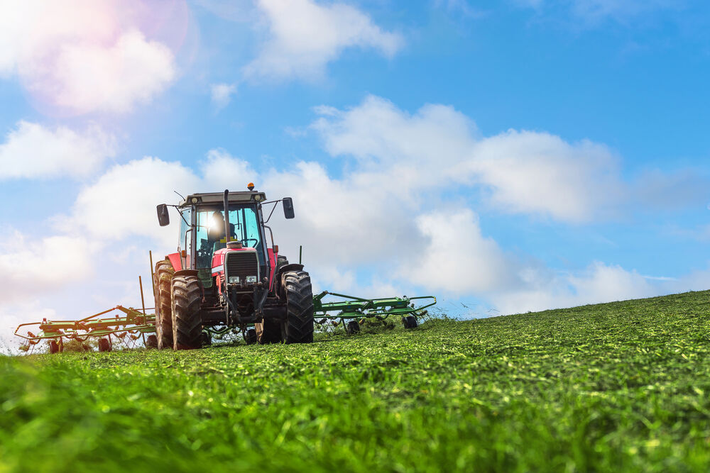
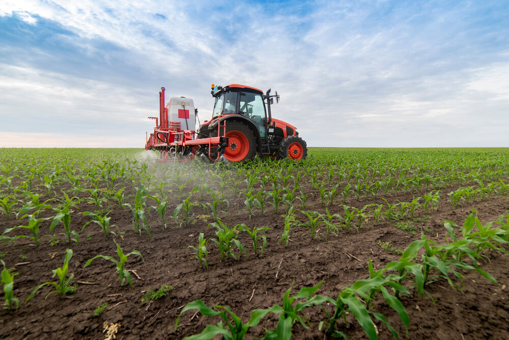

Нашите земеделски смазочни материали осигуряват надеждна производителност и стойност за разнообразна земеделска техника и машини, формулирани да работят във всеки климат и условия и създадени да гарантират подобрена оперативна ефективност. Решенията ни са доверени, защото разбираме отблизо изискванията и грижите на земеделците и сме се отдали изцяло на работата заедно със земеделския сектор, за да преодолеем уникалните предизвикателства, пред които е изправен.
По-прости, по-безопасни, по-ефективни. Непрекъснато се учим и развиваме, за да подобряваме още нашите многоцелеви земеделски греси и смазочни материали. За нас няма нищо по-важно от това да слушаме клиентите си — става дума за истинско разбиране на нуждите ви и работа заедно, за да ги посрещнем. Произведени по най-високи стандарти, предлагаме и специализирана подкрепа, която улеснява закупуването на масла и смазочни материали за различна земеделска техника.
Предлагайки надеждна производителност и стойност с универсално приложение в различна земеделска техника, нашите земеделски смазочни материали са формулирани да работят безупречно във всеки климат и условия — докато земеделските ни греси са внимателно проектирани да гарантират гладката работа на цялата земеделска техника, включително комбайни, трактори и други.
Иновативните, интелигентни и интуитивни продукти на Gulf са разработени специално да подкрепят устойчивия растеж — и разбираме конкретните изисквания на всеки бизнес, с който работим, във всеки мащаб.

С постоянния ни стремеж към изследвания и разработки създадохме търговската си линия спрей масла за пестициди за защита на растенията, която помага за унищожаването на вредители и болести през целия цикъл на отглеждане на културите — като гарантира устойчиви и интелигентни продукти, които помагат за запазване на качеството на продукцията ви. Това бързоразпадащо се емулгиращо минерално масло не оставя вредни остатъци, което позволява на продукцията да остане свежа и чиста. Ефективно, но екологично, то е един от най-безопасните търговски пестициди на пазара днес.
Да отговаряме на нуждите на клиентите си е една от основните ни сили — затова работим неуморно, за да създаваме по-устойчиви продукти, които опазват околната среда и увеличават рентабилността чрез запазване на качеството на продукцията ви.

Искрената грижа и отдадеността към клиентите ни остават в сърцето на всичко, което правим — водени от желанието да намираме решения на проблемите, с които се сблъскват земеделците. През последния век работим в тясно сътрудничество с клиентите, за да разберем бизнеса и уникалните им изисквания на по-дълбоко ниво, което ни позволява да предлагаме иновативни, високопроизводителни продукти, които отговарят и надхвърлят всяка тяхна нужда.
Общността е жизненоважна за нас в Gulf. Затова възприемаме съвместен подход и редовно се срещаме със земеделци, за да слушаме и да научим повече за уникалните им нужди и притеснения. Чрез тези срещи сме създали програми и събития на местно ниво, насочени към земеделци и производители на техника (OEM). Резултатът? Високопроизводителни земеделски смазочни материали и спрей масла, внимателно разработени да помагат на земеделците да работят по най-добрия начин, независимо с какви предизвикателства се сблъскват.

Смазочните ни материали за земеделска техника са създадени да защитават земеделското оборудване при най-тежки условия и да осигуряват върхова производителност във всеки климат. От многоцелевите ни земеделски масла до маслата ни за трактори предлагаме пълна линия продукти, които отговарят на всяка земеделска нужда.
Знаем, че експлоатационните изисквания на повечето земеделски стопанства надхвърлят тези на повечето други — затова нашите земеделски масла и смазочни материали са създадени да издържат на интензивна употреба. Универсалното ни тракторно масло и многоцелевите ни масла също намаляват нуждата от складиране и съхранение на множество различни масла, свеждат до минимум неправилното приложение и намаляват разходите.


